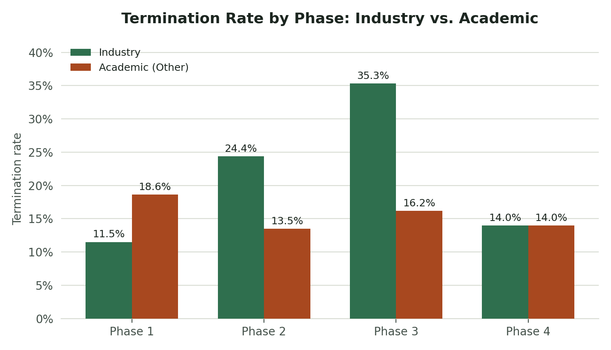
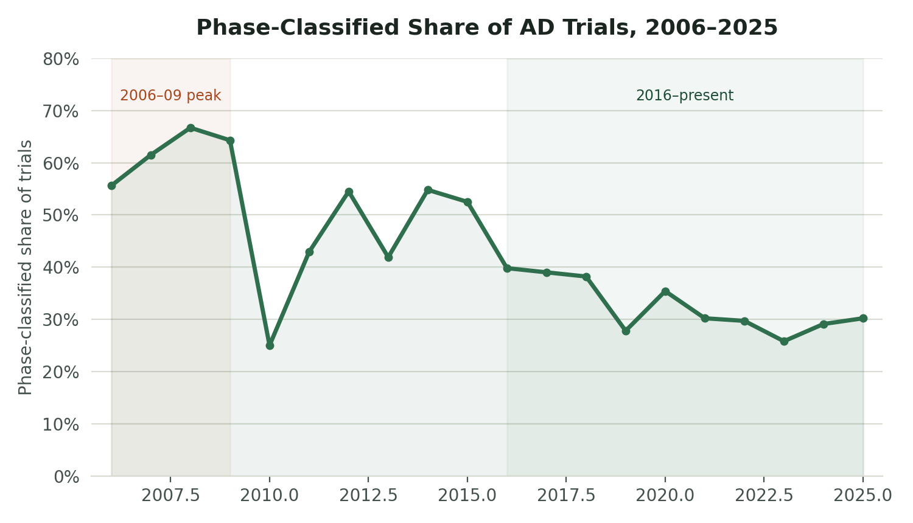
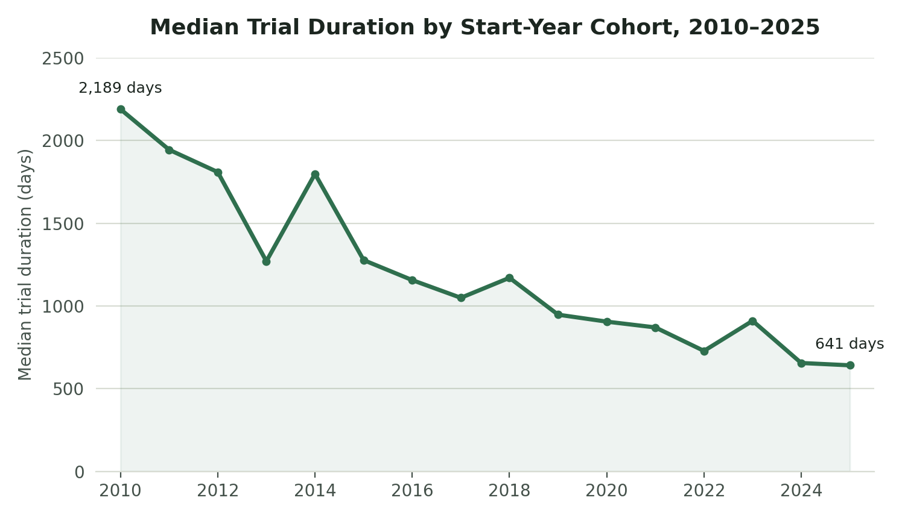

A full ETL pipeline over real clinical trial data, not a toy dataset, built to answer a genuine research question: where does Alzheimer's drug development actually fail, and how has the field responded? The SQL analytics layer is the showcase, and the pipeline underneath it is what makes the numbers trustworthy.
Where does Alzheimer's drug development actually fail? Has the field's research mix shifted in response? And are the trials that do run getting faster or slower over time? These questions were framed and answered against a real, cloud-hosted pipeline, drafted only after seeing what the data supported, not assumed going in.
A Python extraction script pulls the full Alzheimer's-scoped dataset from ClinicalTrials.gov's public API, deliberately requesting full study records rather than a field-filtered subset. That keeps the nested JSON genuinely messy, so the dbt staging layer's flattening work is a real exercise rather than something the extraction script already handled. It lands in BigQuery as raw JSON, then gets modeled through three dbt layers:
| Layer | Model | Purpose |
|---|---|---|
| Staging | stg_studies | Flattens nested JSON into one clean row per study |
| Intermediate | int_studies_categorized | Business-logic categorization: outcome status, phase grouping, duration fields |
| Marts | fct_studies | The stable, query-ready fact table — analysis and BI tools query only this |
dbt tests enforce not_null and unique on
nct_id and category validity across all three layers.
A genuinely empty phases array, typically an observational study, is
kept distinct from an array containing the literal string
"NA", an interventional study with no applicable phase.
Those are different things, and collapsing them into one "unknown"
bucket would have lost that distinction.
A window-function ranking of termination rate by sponsor class and phase, restricted to trials with a known outcome (excluding still-active trials, since their outcome isn't known yet).
| Sponsor class | Phase | n | Termination rate |
|---|---|---|---|
| Industry | Phase 1 | 357 | 11.5% |
| Industry | Phase 2 | 316 | 24.4% |
| Industry | Phase 3 | 190 | 35.3% |
| Industry | Phase 4 | 43 | 14.0% |
| Academic (Other) | Phase 1 | 156 | 18.6% |

A "Phase 3 valley of death," specifically for industry. Industry-sponsored termination risk climbs steadily from 11.5% at Phase 1 to 35.3% at Phase 3, the field's most expensive and statistically rigorous stage, before dropping at Phase 4. That drop is explained by survivorship: only already-approved drugs reach post-approval trials. Academic trials show the opposite pattern, peaking at Phase 1 (18.6%), plausibly a different failure mode entirely — grant funding lapsing rather than a drug failing to show efficacy.
Caveat: federal, NIH, and other-government sponsor classes have small sample sizes in several phase groups (as low as n=5–13). Their rates are noisier and shouldn't be read with the same confidence as the Industry and Academic findings above.
Comparing phase-classified interventional trials (the "classic" drug trial) against non-phase-classified studies (largely observational or biomarker research) over time, and on other characteristics.
| Era | Phase-classified share |
|---|---|
| 2006–2009 (peak) | 60–67% |
| 2016–present | 25–36% |

| Sponsor class | Non-phase avg. enrollment | Phase-classified avg. enrollment | Ratio |
|---|---|---|---|
| Academic (Other) | 4,512 | 123 | ~37× |
| Industry | 7,053 | 401 | ~18× |
The field has shifted toward observational research. The phase-classified share of AD trials fell from a 60–67% peak (2006–2009) to a sustained 25–36% from 2016 onward, with no real recovery. Non-phase (observational) trials also enroll 15–35× more participants than interventional ones. That makes sense once stated: observational studies just track people, while interventional trials require per-participant dosing and safety monitoring, keeping them inherently smaller. NIH- and network-sponsored non-phase trials show extremely long average durations (3,194 and 4,643 days, or 8.7 and 12.7 years), consistent with the decades-long longitudinal cohort studies NIH is known for funding in this space — ADNI, the Alzheimer's Disease Neuroimaging Initiative, is the well-known real-world example.
A plausible connection to Question 1, worth labeling clearly as interpretation rather than something the data proves directly: if industry drug trials keep failing hardest at the expensive, definitive Phase 3 stage, a field-level shift toward foundational biomarker and observational research is exactly the kind of response you'd expect to see, instead of repeated costly late-phase drug attempts.
Median time-to-completion by start-year cohort, among trials with both a start and completion date recorded.
| Era | Median duration | ~Years |
|---|---|---|
| 2010–2014 (peak) | 1,800–2,200 days | 5–6 |
| 2015 | 1,277 days | ~3.5 |
| 2024–2025 | 641–655 days | <2 |

Trial duration has roughly halved since its 2010–2014 peak, from 1,800–2,200 days down to 641–655 days by 2024–2025, with solid sample sizes in recent years (n=218–252) giving real confidence in the trend. This isn't just a side effect of the Question 2 mix shift. Checked directly, phase-classified and non-phase trials have similar average durations within each sponsor type (877 vs. 857 days for Industry, 1,272 vs. 1,201 for Academic), so the shrinking-duration trend is a separate phenomenon. Two plausible explanations, neither proven here: biomarker-based patient enrichment (confirming amyloid-positive status before enrollment) letting trials reach conclusions faster with better-selected participants, or growing regulatory and field urgency given Alzheimer's unmet need.
Caveat: early years (1981–2005) and the tail year (2027) have tiny sample sizes (n=1–4) and aren't filtered the same way as the rest of this analysis. They're noisy and shouldn't be read as signal.
Drug development struggles hardest at the expensive, definitive Phase 3 stage → the field has shifted toward more observational and biomarker research over the same period → and the trials that do run have gotten meaningfully faster over the past decade. Each of these was drafted only after seeing what the data supported, not assumed in advance.
Python · BigQuery · dbt Core · SQL (window functions, multi-step CTEs) · ClinicalTrials.gov API v2